Motionless In White: Эстетика Тьмы и Громкого Протеста
Группа Motionless in White была сформирована в 2005 году в угольном городке Скрэнтон, Пенсильвания, вокалистом Крисом «Motionless» Черулли и гитаристом Энджи Фатерой. Название, отсылающее к песне Eighteen Visions («Motionless and White»), мгновенно задало эстетику: смесь ужаса, романтики и агрессии. Дебютный альбом Creatures (2010) на лейбле Fearless Records стал культовым в металкор-андеграунде, сочетая брутальные брейкдауны с клавишными партиями в духе Type O Negative и визуальным стилем «готический вампир meets хот-топик». Песня «Creatures» и кавер на «Du Hast» Rammstein закрепили за группой репутацию самых тёмных выскочек сцены.
Личности: Архитекторы Хоррор-Метала
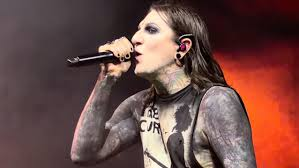
Chris Motionless — вокал
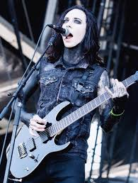
Ricky "Horror" Olson — гитара
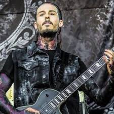
Ryan Sitkowski — гитара
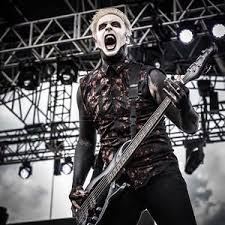
Justin Morrow — бас
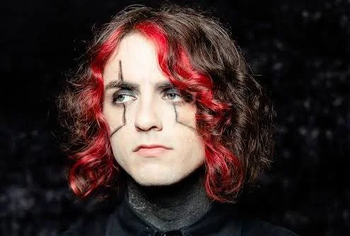
Vinny Mauro — барабаны
Дискография: От «Ужасов» до «Конца Света»
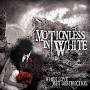
When Love Met Destruction (2009)
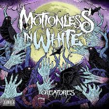
Creatures (2010)
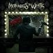
Infamous (2012)
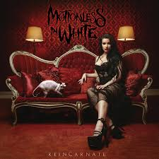
Reincarnate (2014)
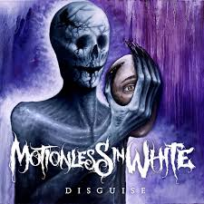
Disguise (2017)
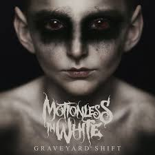
Graveyard Shift (2019)
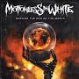
Scoring the End of the World (2022)
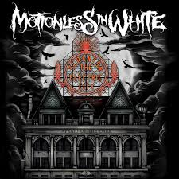
Новый альбом (2026)
Эволюция Звукового Ландшафта
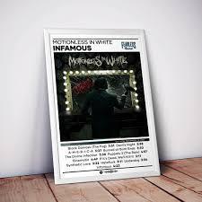
Второй альбом Infamous (2012) стал полем битвы: лейбл требовал от команды более коммерческого звучания, близкого к Asking Alexandria, что привело к открытому конфликту. Крис Черулли позже признавался, что ненавидел финальный микс пластинки, назвав его «перепродюсированным радио-дерьмом». Однако именно в этот период группа обрела скандальную славу из-за постоянных сравнений с Black Veil Brides и жесткой цензуры текстов. Кульминацией стала песня «America», клип на которую запретили за резкую критику правительства. После выпуска Reincarnate (2014) группа вернула себе уважение критиков.
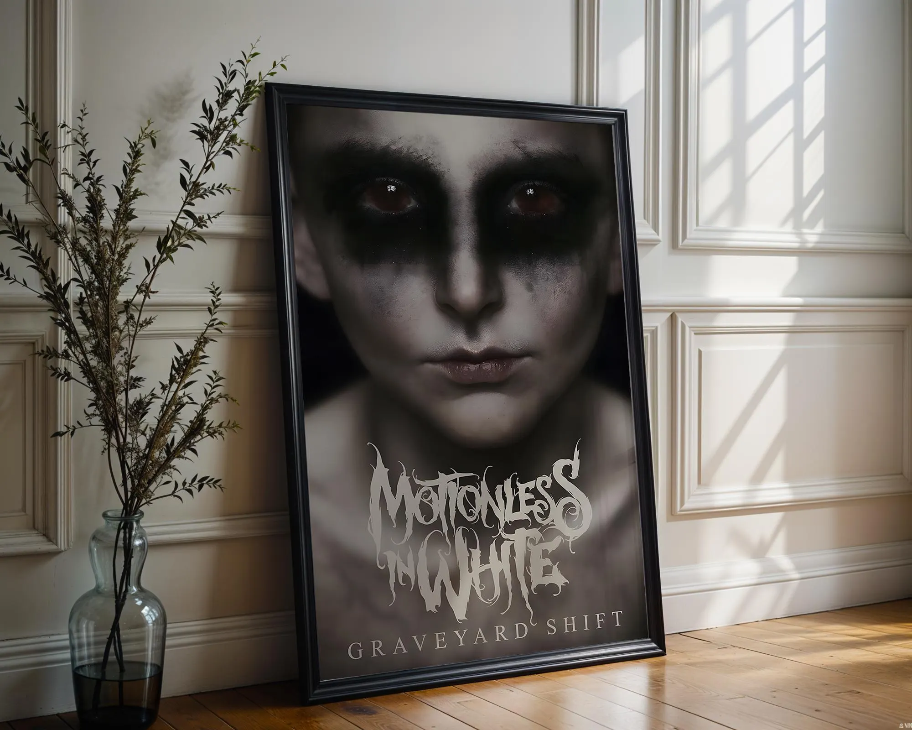
Настоящий коммерческий прорыв случился с альбомом Graveyard Shift (2017), где Motionless in White соединили металкор с индастриал-металом в духе Marilyn Manson и Nine Inch Nails. Супер-хит «Voices» стал гимном для маргиналов, а «Eternally Yours» — обязательной балладой на каждом концерте. Видеоклипы превратились в короткие фильмы ужасов. В этот же период Крис Черулли наконец победил анорексию и наркозависимость, а его облик стал более мускулистым и харизматичным.
Наследие и Будущее: 2026
Два последних альбома — Disguise (2019) и особенно Scoring The End Of The World (2022) — закрепили статус Motionless in White как главных наследников жанрового кибер-метала. Сегодня, спустя 20 лет после основания, Motionless in White — это не просто группа, а мультимедийная вселенная хоррора: они выпускают собственные комиксы, линию кукол и хэллоуинские маски. Крис Черулли стал иконой для целого поколения Outsiders, доказывая, что «быть странным — это нормально».
В 2024–2025 годах группа вступила в «эпоху переосмысления». После сингла «The End Is The Beginning Is The End» (кавер на Smashing Pumpkins) они анонсировали самый агрессивный материал со времён Creatures. Сегодня они балансируют между ролью хэдлайнеров фестивалей (Download UK 2025) и хранителей готического хоррора. Их будущий альбом, ожидаемый в конце 2026 года, по слухам, будет двойным: возвращение к брутальности и синти-поп эксперименты одновременно. Motionless in White продолжают танцевать на могилах жанровых ограничений.